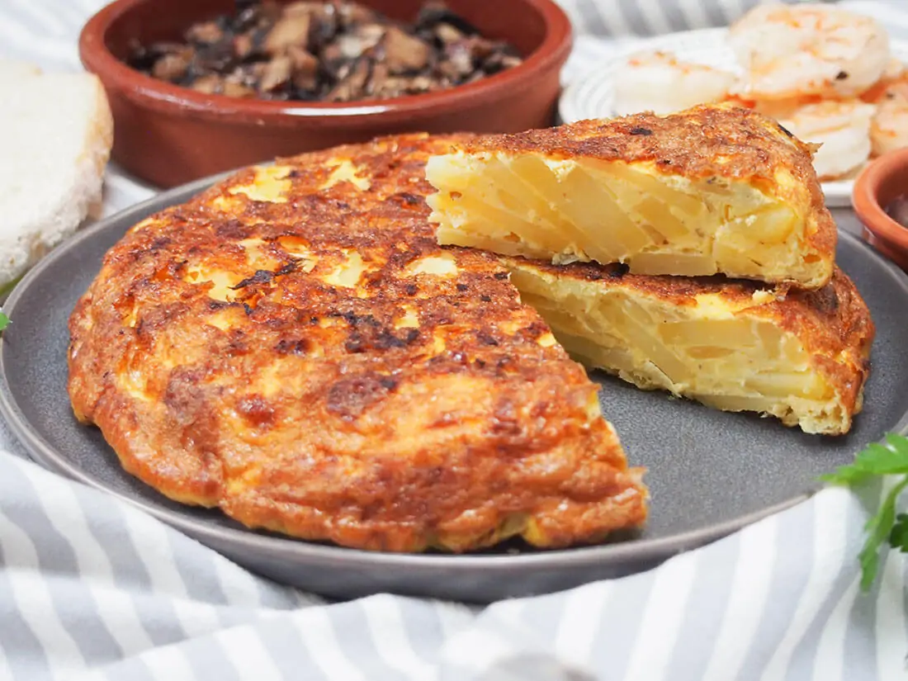

Spanish Omelet

Description
Spanish omelet or Spanish tortilla is a traditional dish from Spain. Celebrated as a national dish by Spaniards, it is an essential part of the Spanish cuisine. It is an omelette made with eggs and potatoes, optionally including onion. It is perfect for picnics, parties, bbq's, or your traditional tapas menu! Upgrade your omelet!
Ingredients
- 1/2 cup olive oil
- 5 medium-sized potatoes, sliced thin
- 5 medium-sized potatoes, diced into 1-inch pieces
- 8 eggs
- Salt, to taste
- Ground black pepper, to taste
Steps
- Heat the oil in a nonstick medium-sized (30cm/12-inch) pan. Fry potatoes until crispy, golden and tender. Add the onion and fry until transparent. Drain oil (use a metal colander if you have one), until all of the oil is drained.
- Return potatoes and onions to the pan, arranging them in a single layer. Reduce heat down to low.
- Beat eggs with salt and pepper to taste. Pour egg mixture into the pan, moving the potatoes and onions around the eggs using a plastic spatula. Every so often, move the eggs around the potatoes while it's cooking to ensure the eggs cook on the bottom, so there's not much eggs left on the top.
- Place a big, round plate on top of the pan, and with your hand holding the plate, flip the tortilla onto the plate. Then, slide the tortilla back into the pan carefully, moving the onion and potatoes carefully back into the pan along with the tortilla.
- Keep cooking, gently shaking the pan occasionally, until completely cooked through.
- To remove the tortilla from the pan, place a clean plate on top of the tortilla and flip again onto the plate.
- Serve with a salad, or use as an entree or appetiser. Great for snacks. Traditionally served as tapas in little squares.
Tips
- Hand-slice the potatoes. Food processors might slice them too thinly and the potatoes might stick to each other when cooking.
- Drop a single piece of potato or a bit of bread into the oil to determine when the oil is hot enough to fry the potatoes and onions. The piece of food should sizzle when the oil is ready.
- Watch the heat while frying. If the oil is too hot, the potatoes will brown rapidly on the outside but be raw on the inside.
Back to Spanish Recipes